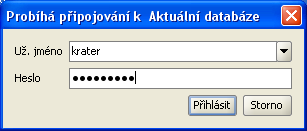
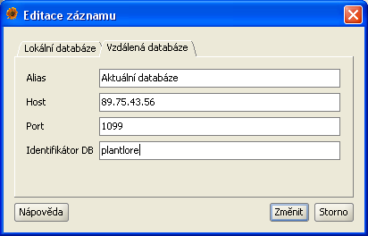
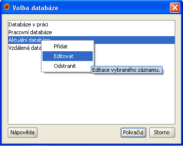

Před započetím práce s Plantlore je zapotřebí se přihlásit k databázi, se kterou chcete pracovat.
Přihlášení k databázi, kde jsou Vaše data uložena, probíhá ve dvou krocích.
Po instalaci Plantlore je k disposici jedna databáze pojmenovaná "Ukázková databáze". Tato databáze neobsahuje žádná nálezová data a je připravena pro započetí práce. Neobsahuje-li seznam databází žádný záznam, budete jej muset vytvořit - o tom pojednává druhá část této nápovědy.
Po jisté době používání Plantlore může váš seznam databází vypadat podobně jako ten na obrázku. Plantlore automaticky předvolí tu databázi, kterou jste zvolili při posledním přihlašování. Vyberte jednu z databází v seznamu a stiskněte tlačítko "Pokračuj".
Pro přihlášení k databázi je potřeba se prokázat přihlašovacími údaji - uživatelským jménem a heslem. Pokud se přihlašujete poprvé, zadejte přihlašovací údaje, které jste použili při instalaci Plantlore. Nové uživatelské jméno a heslo smí z bezpečnostních důvodů přidělit pouze administrátor databáze. Často i zkušení uživatelé používají velmi slabá hesla, proto je jejich přidělování přenecháno jemu.

Plantlore si pamatuje několik posledních uživatelských jmen vkládaných při přihlášování; můžete vybrat jedno z připraveného seznamu, nebo zadat jiné uživatelské jméno. Hesla Plantlore neukládá a automaticky je nikdy nenabízí. Po zadání údajů stiskněte tlačítko "Přihlásit".
Stiskem tlačítka "Přihlásit" se Plantlore pokusí připojit k vybrané databázi se zadanými přihlašovacími údaji. Připojení může (zejména pokud se připojujete ke vzdálené databázi) trvat delší dobu.
Pokud se přihlášení z nějakého důvodu nezdaří, budete o tom informováni krátkou zprávou. V opačném případě Plantlore zobrazí základní Přehled.
Chcete-li se připojit k jiné databázi, kterou jste sami vytvořili nebo kterou vytvořil někdo jiný na svém počítači, musíte vytvořit nový záznam, který popisuje, kde se databáze nachází a jak je nastavena.
Kontextové menu pro vytvoření, upravení nebo vymazání záznamu lze vyvolat stiskem pravého tlačítka myši. Vyberte položku "Přidat" a klikněte na ni.
Přidání nového záznamu pro připojení k databázi je rozděleno na dvě části, jimž odpovídají dvě záložky na dialogu.
Parametry popisující přímé připojení:
| Název | Význam |
|---|---|
| Alias | Alias je krátký řetězec, který umožňuje snadnou identifikaci databáze uživatelem. Tento řetězec je zobrazován v seznamu databází. Měl by být krátký a výstižný, například: "Domácí databáze", "Projekt mapování Českého středohoří". |
| Databázový stroj (engine) | Existuje několik databázových strojů (database engine), které umožňují snadnou práci s databázemi, tabulkami, uživateli, dotazy a daty. Každý databázový stroj může obsahovat několik různě pojmenovaných databází s různou strukturou a s různým obsahem. Mezi nejznámější databázové stroje patří Oracle, MSSQL, MySQL, Postgre a Firebird. Plantlore podporuje práci s různými databázovými stroji, ale je nutné přesně specifikovat, o který se jedná, aby s ním bylo možné bezchybně komunikovat. Plantlore je standardně dodávána s Postgre. Aktuálně podporované DB stroje jsou sepsány v rozbalovací nabídce, ale je možné specifikovat i jiný. |
| Identifikátor DB | Databázový stroj může obsahovat několik různých databází s různou strukturou a obsahem. Databáze Plantlore mají vlastní specifickou strukturu. Pro správné připojení je nutné vyplnit identifikátor (jméno) databáze, se kterou chce pracovat. |
| Port DB | Databázové stroje umožňují připojení pouze přes tzv. port. Každý databázový stroj má tento port jiný a navíc jej lze snadno změnit. Aby Plantlore věděl, kde má databázový stroj kontaktovat, musí znát port, na kterém stroj naslouchá. Port je číslo v rozsahu 0 až 65.535, přičemž je běžné, že databázové stroje využívají porty v rozsahu 1.024 a výše. Například standardní port databázového stroje Postgre je 5432. |
| Parametr |
Databázový stroj může být potřeba ještě nakonfigurovat nějakým specifickým
způsobem. Některé stroje například vyžadují explicitní nastavení kódování
znaků. Parametr slouží
pro správné nastavení dodatečných parametrů připojení k databázovému stroji.
Připojení k Postgre žádný parametr nevyžaduje.
Odborné: parametr je hodnota předávaná v připojovacím JDBC řetězci za "?". |
Na ukázku uveďme, jak by vypadalo lokální připojení k databázi nazvané "plantlore", která je uložena v databázovém stroji "Postgre", který naslouchá na portu "5432".

Parametry popisující vzdálené připojení:
| Název | Význam |
|---|---|
| Alias | Alias je krátký řetězec, který umožňuje snadnou identifikaci databáze uživatelem. Tento řetězec je zobrazován v seznamu databází. Měl by být krátký a výstižný, například: "Oficiální databáze Jihočeské pobočky ČBS". |
| Host | Databázový stroj obsahující databázi, k níž se chceme připojit, běží na jiném počítači v síti. Tento parametr identifikuje tento počítač a to buď podle jeho jména nebo IP adresy. Každý počítač připojený k síti musí mít svou vlastní unikátní IP adresu, podle níž je rozpoznán. IP adresa je nejčastěji čtveřice čísel oddělená tečkami, např. "192.168.0.247". Některé počítače mají kromě IP adresy přidělena i jména, např. "data.domacisit.cz". Cílový počítač lze identifikovat oběma způsoby. |
| Port | Aby bylo možné se připojit ke vzdálenému databázovému stroji, je nutné na uvedeném vzdáleném počítači kontaktovat Plantlore Server, což je speciální aplikace, která má za úkol zprostředkovávat připojení vzdáleným klientům a dohlížet na počet připojených uživatelů. Tato služba musí být přístupná na vzdáleném počítači, kde se nachází i vzdálený databázový stroj, a naslouchá na nějakém portu. Standardní port, na kterém je tato služba dostupná, je 1099. |
| Identifikátor DB | Databázový stroj může obsahovat několik různých databází s různou strukturou a obsahem. Databáze Plantlore mají vlastní specifickou strukturu. Pro správné připojení je nutné vyplnit identifikátor databáze, se kterou chce pracovat. |
Na ukázku uveďme, jak by vypadalo nastavení pro vzdálené připojení k databázi nazvané "plantlore", která je uložena v databázovém stroji, který se nachází na počítači s adresou "192.168.0.247", a Plantlore Server naslouchá na portu "1099".

Přidáváte-li nový záznam, žádná nová databáze se nikde nevytváří; vytváří se pouze reference (odkaz) na nějakou existující databázi.
V seznamu databází označte záznam, který chcete upravit nebo smazat. Kontextové menu pro vytvoření, upravení nebo vymazání záznamu lze vyvolat stiskem pravého tlačítka myši. Vyberte položku "Editovat" nebo "Odstranit" a klikněte na ni.

Úprava záznamů je shodná s dialogem pro přidání záznamu, ale obsahuje předvyplněné hodnoty. Detailní popis lze najít v předcházející části.
Odstranění záznamu další nastavení nemá.
Mažete-li existující záznam, žádná databáze se nikde nemaže; ruší se pouze reference (odkaz) na nějakou existující databázi.
Nejčastější problémy při připojování jsou tyto:
Po skončení práce s databází je doporučeno se odhlásit, aby třetí osoba nezískala možnost pracovat s vašimi daty. Odhlášení provedete buď v menu položkou "Odhlásit" nebo vypnutím Plantlore. Oba způsoby jsou ekvivalentní.
Při práci s Plantlore může dojít k náhlé ztrátě připojení k databázi nebo vzdálenému serveru. Důvodem může být neočekávané vypnutí nebo pád databázového stroje nebo Serveru či výpadek síťového spojení. O tomto stavu jste informováni krátkou zprávou, která popisuje problém, ke kterému došlo. V případě ztraceného spojení s databází nebo Serverem vyčkejte nějakou dobu a zkuste v menu vybrat "Znovu připojit". Plantlore se pokusí navázat nové spojení. "Znovu připojit" můžete volat opakovaně.